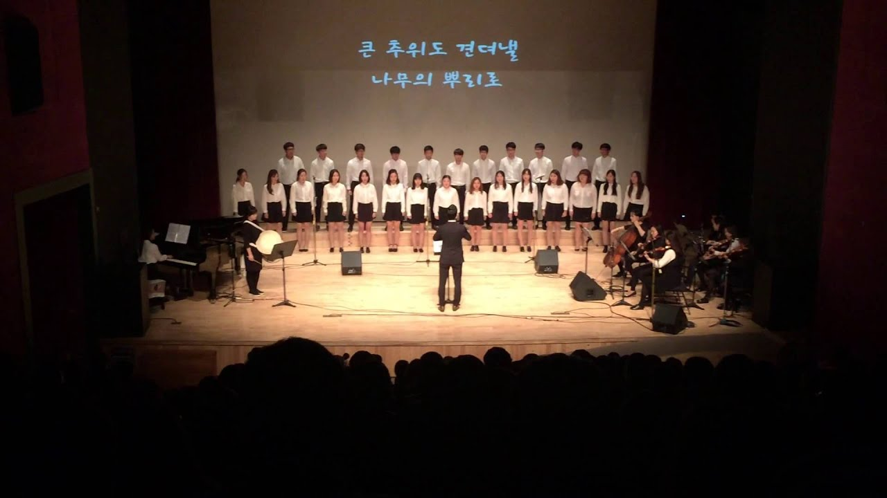

 '너나들이'란, 서로 '너', '나'하고 부르며 터놓고 허물없이 지내는 사이를 뜻하는 순우리말 입니다. 형식적인 예의보다도 서로간의 신뢰가 두툼한 친구사이. 이것이 바로 '너나들이'입니다. 너나들이 하모니는 한동대학교 남북 청년 통일 합창단으로, 통일에 마음이 있는 한동대학교 남한 청년과 북한 청년이 모여 만든 합창단입니다. 남과 북에서 온 청년들이 하나 되어 내는 하모니를 통해, 곧 다가올 통일의 모습을 '함께' 그려가고자 합니다.
♪ . 한 마음으로 하모니를 만들어 나가며 진정한 하나 됨을 경험할 것입니다.
♪♪ . 남과 북의 경계를 터놓고 허물없는 친구관계로 하나 될 것입니다.
♪♪♪ . 합창 이외에도 서로를 이해하고 알아갈 수 있는 다양한 프로그램들을 구성하여 보다 깊은 하나 됨을 위해 나아갈 것입니다.
♪♪♪♪ . '하모니를 통해 우리 안에서의 작은 통일을 시작합니다.'
'너나들이 하모니는' 2013년 한동대학교 지역사회 복지론 수업의 일환으로 진행되었던 프로젝트가 계속적으로 이어져, 현재 2015년 3기의 27명 단원들이 활동하고 있으며, 통일에 대한 마음과 비전을 더욱 키워나가고 보다 많은 사람들이 함께 통일에 대한 마음을 갖도록 노래하며 전하는 모임입니다.
너나들이 하모니는 크게 두 가지 방향에 목적을 두고 활동하고 있습니다. 첫 번째는 북한과 통일에 대해 배우며 나누는 활동이고, 두 번째는 합창입니다. 이에 따라 정기모임도 북한과 통일에 대해 다가가고 마음을 여는 '특별 프로그램'을 진행하며 합창연습을 병행하는 시간으로 보내고 있습니다. '특별 프로그램'시간은 약 1시간30분으로 이루어지며, 새터민의 강연을 듣는 시간, 북한의 언어와 문화 등에 대해 알아가는 시간 등 다양한 방법으로 구성되어 진행되고 있습니다. 더하여, 이러한 기본활동 외에도 한동대학교에서 개최되는 북한, 통일과 관련된 프로그램에 찬조공연으로 동참하기도 하며, 최종적으로는 2학기에 자체 공연을 기획하고 개최하여 통일에 대한 마음과 하모니를 나누고 있습니다.